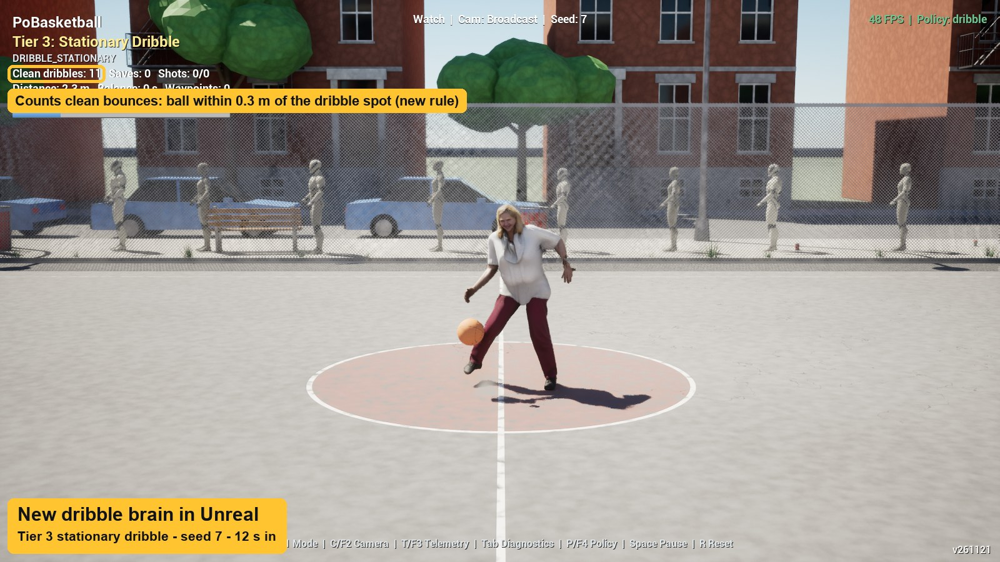
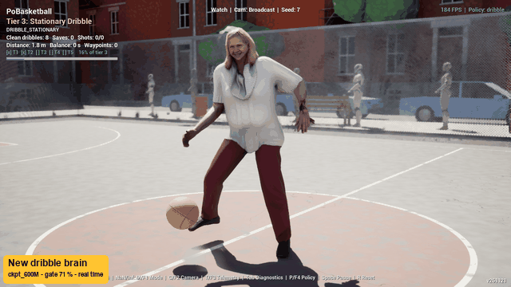
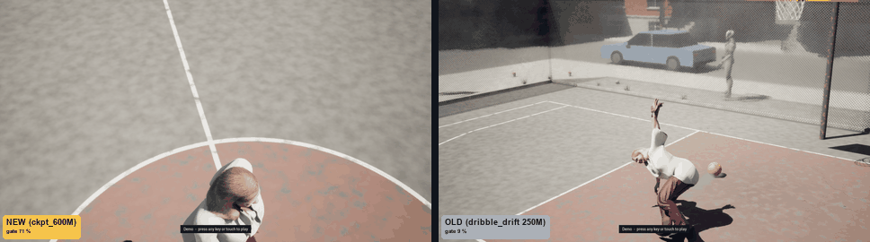
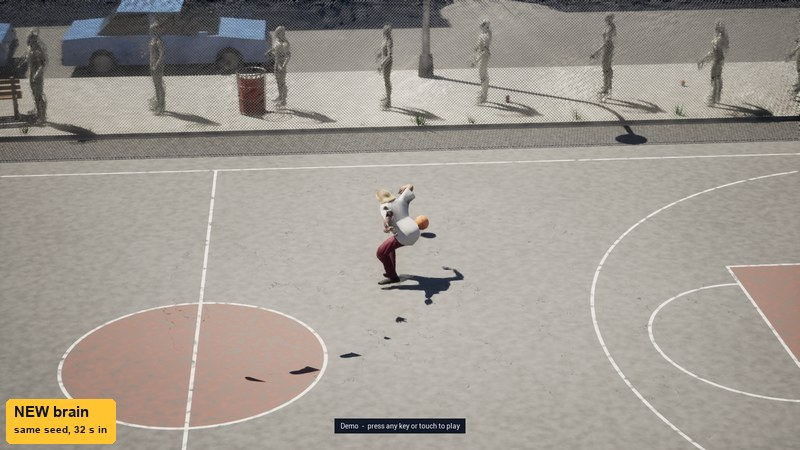
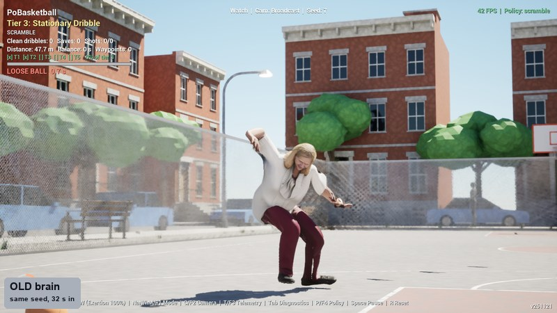
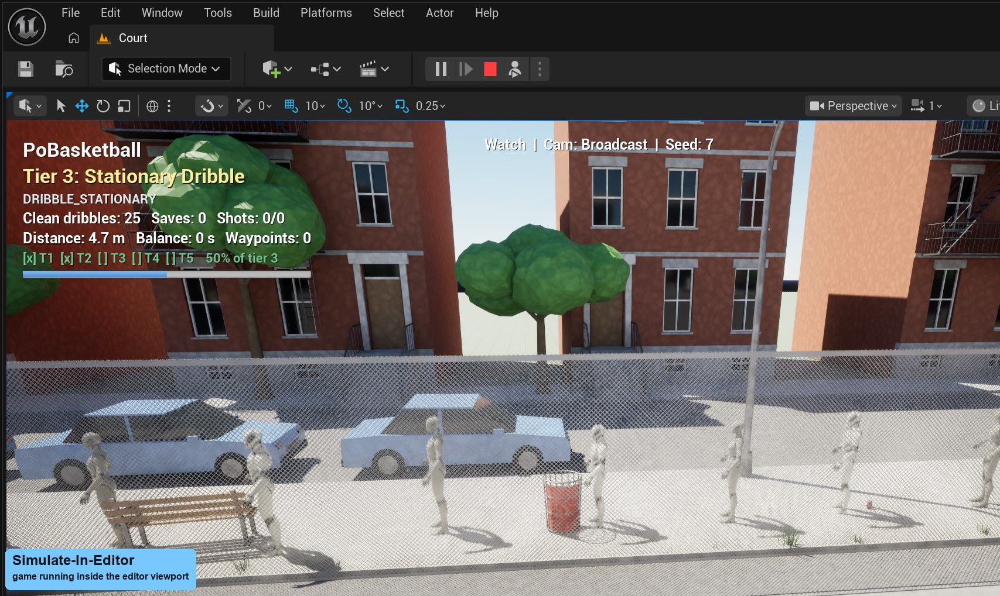
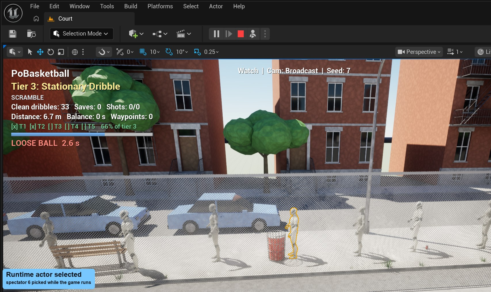
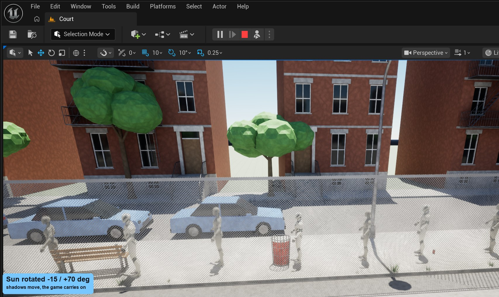
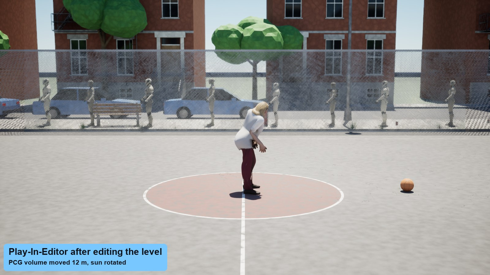

Everything below was recorded from the running app: the newest trained brain (dribble.onnx, exported from
checkpoint 600M) loaded by Unreal's NNE ONNX runtime in inference mode, at tier 3 (stationary dribble), right hand, random seed 7.
All images are rendered by the engine or captured from the Unreal editor window itself.
Grandma bounces the ball beside her right foot and keeps it under control. The HUD's "Clean dribbles" counter (top left) counts bounces that pass the new rule: palm touch, apex height 0.65-1.00 m, ball within 0.3 m of the dribble spot.

Policy: dribble at 48 FPS (inference on CPU, about 0.03 ms per step).
Both runs start from the identical situation (seed 7). Left: the new brain. Right: the brain from 2026-11-20 morning.

| First 40 s of play | New brain | Previous brain |
|---|---|---|
| Hard resets (fall or ball lost for good) | 1 | 7 |
| Loose balls (director hands over to the scramble brain) | 4 | 17 |
| Longest dribble before the first loose ball | 22.4 s | under 3 s |
| Sim gate success (200 episodes of 45 s) | 71 % | 9 % |


What it means: the stationary dribble is now a usable skill in the game. Two weak spots remain. She slowly drifts away from her start spot (it ends 28 % of sim gate episodes), and when the scramble brain hands the ball back, the dribble brain loses it again within 0.1 s, because it was never trained from that hand-over.
The Court level holds only five placed actors: the sun, sky light, sky atmosphere, the procedural neighbourhood (a PCG volume)
and StreetballWorld. The athlete, ball, court and hoop are spawned at Play from the physics file
sim/assets/scene.xml, and the crowd and props are spawned by the game. The test: start Simulate-In-Editor, select
and move things during play, and check the game's behaviour.




| Game event (seed 7) | Untouched game run | Simulate-In-Editor, actors moved mid-game |
|---|---|---|
| Ball goes loose | 22.44 s | 22.44 s |
| Scramble regains / loses it | 24.16 / 24.28 s | 24.16 / 24.28 s |
| Regained again | 27.06 s | 27.06 s |
| Next two resets | fallen, countdown | fallen, countdown |
What it means: lights, the neighbourhood and spawned props can be moved freely; the physics and the brains don't read their positions, so the game plays out exactly the same. Three limits are worth knowing:
StreetballWorld has no transform (no root component), so it has no gizmo; the simulation is anchored at the physics origin by design.scene.xml at Play, so changes go there.Goal: dribble toward the basket, then gather and shoot (decided: walk first, a close set shot, keep the tier ladder).
A new training level, l3a_walk, sends her to waypoints 2-6 m away, starting at 0.3-0.8 m/s.
| Finding | Result |
|---|---|
| The dribble brain fell within 2 s on the first walk command | Its speed and direction inputs had never been used, so a command arrived thousands of times too large. Fixed with a new tool that zeroes those inputs at the start (252 of 256 test episodes then still dribbling at 12 s). |
| 1-hour training test (41 M steps) | She moved faster (0.29 → 0.57 m/s) but fell more and never reached a waypoint. PPO alone can't invent a gait for this network. |
| Next idea | Borrow the gait of the trained walking brain: combine its leg actions with the dribble brain's arm, then train the dribble brain to copy that. |
Nothing from this step is in the game yet: a dribble brain that hasn't trained on walking would fall over at tier 4.
UnrealEditor.exe StreetballGym.uproject -game -windowed -ResX=1600 -ResY=900 -StreetballSeed=7 -StreetballStartTier=3 -StreetballMaxTier=3 -StreetballDribbleHand=right -StreetballQuitAfter=40 -StreetballCapture=6:4:12:body:n21new_gif+12:0:0:bc:n21new_bc12+... (old brain: -StreetballPolicy_dribble=policies/dribble_drift250.onnx) GIF bursts: same, plus -ExecCmds="slomo 0.25" Editor: UnrealEditor.exe StreetballGym.uproject -StreetballStartTier=3 ... -ExecCmds="py gizmo_sie.py" (level never saved) Media: sim/.venv/Scripts/python.exe SCREENSHOTS/20261121_review/make_media.py